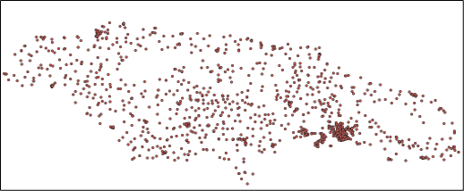

Point-level results

Output File Metadata
n addition to the columns below, any columns present in the original Point of Interest data are carried over to this output file. If your input data was of type GeoJSON or GeoPackage, then columns geometry (containing the geometry), wkt (containing the geometry in Well-Known Text format) and crs (indicating the coordinate reference system) will also be created.
| Analysis Source | Indicator | Description |
|---|---|---|
| Input POI data | dataset_id |
Identifier for the source dataset containing this POI |
geometry |
Geometric representation of POI location (point coordinates) | |
lat |
Latitude coordinate of the POI location | |
lon |
Longitude coordinate of the POI location | |
poi_id |
Unique identifier for each Point of Interest (POI) | |
poi_type |
Category/type of POI (e.g. school, health center, town hall) | |
is_connected |
Indicates whether the POI is connected to the internet (True/False) | |
connectivity_type |
Type of connectivity used to connect the POI in the original data | |
has_electricity |
Whether the POI has electricity (True/Flase) | |
country_code |
ISO 3-letter country code where the POI is located | |
analysis_id |
Unique identifier for the analysis | |
| Proximity | 2g_cell_site_dist |
Distance in meters to nearest 2G cell site |
3g_cell_site_dist |
Distance in meters to nearest 3G cell site | |
4g_cell_site_dist |
Distance in meters to nearest 4G cell site | |
5g_cell_site_dist |
Distance in meters to nearest 5G cell site | |
cell_site_dist |
Distance in meters to nearest cellular tower (any generation) | |
fiber_node_dist |
Distance in meters to nearest fibre optic network node | |
transmission_node_dist |
Distance in meters to nearest transmission infrastructure node | |
| Coverage | 2g_mobile_coverage |
Boolean indicating if POI has 2G mobile network coverage |
3g_mobile_coverage |
Boolean indicating if POI has 3G mobile network coverage | |
4g_mobile_coverage |
Boolean indicating if POI has 4G mobile network coverage | |
5g_mobile_coverage |
Boolean indicating if POI has 5G mobile network coverage | |
| Demand | mbps_demand_per_user |
Bandwidth demand per individual user in Mbps |
number_of_users |
Estimated number of internet users at this POI | |
poi_count_1km |
Number of other POIs within 1km radius | |
poi_count_2km |
Number of other POIs within 2km radius | |
poi_count_3km |
Number of other POIs within 3km radius | |
poi_count_4km |
Number of other POIs within 4km radius | |
poi_count_5km |
Number of other POIs within 5km radius | |
poi_count_10km |
Number of other POIs within 10km radius | |
pop_within_1km |
Population count within 1km buffer around POI | |
pop_within_2km |
Population count within 2km buffer around POI | |
pop_within_3km |
Population count within 3km buffer around POI | |
pop_within_4km |
Population count within 4km buffer around POI | |
pop_within_5km |
Population count within 5km buffer around POI | |
pop_within_10km |
Population count within 10km buffer around POI | |
total_mbps |
Total bandwidth demand in Mbps for this POI | |
| Fibre Path | closest_node_distance |
Distance in meters to the closest fibre node |
closest_node_id |
Identifier of the nearest fibre node | |
connected_node_dist |
Distance in meters to the connected fibre node | |
connected_node_id |
Identifier of the node this POI is connected to | |
fiber_path_order |
Order/sequence number of this POI in the fibre deployment path | |
in_mst_solution |
Boolean indicating if POI is included in fibre path solution | |
max_dist_km |
Maximum allowable distance in km for fibre path solution | |
n_conns |
Number of network connections associated with this POI | |
upstream_node_distance |
Distance in meters to the upstream fibre node | |
upstream_node_id |
Identifier of the upstream network node in the connection path | |
cluster_id |
Label of the geographical cluster the POI is in for the fiber path analysis | |
| Visibility | antenna_los_distance |
Line-of-sight distance in meters for antenna/radio connections |
azimuth_angle |
Directional angle in degrees for point-to-point radio links | |
is_visible |
Boolean indicating if POI has line-of-sight to cellular infrastructure | |
num_visible |
Count of visible cellular sites from this POI location | |
vis_geometry |
Geometric representation of visibility analysis | |
visible_cell_site_dist |
Distance in meters to the nearest visible cellular site | |
visible_cell_site_ict_id |
ID of the nearest visible cellular tower/base station | |
visible_cell_site_radio_type |
Type of radio technology at the nearest visible cell site | |
| Technology Assignment | fiber_feasible |
Whether fibre is feasible for this POI |
p2area_feasible |
Whether p2area is feasible for this POI | |
p2p_feasible |
Whether p2p is feasible for this POI | |
satellite_feasible |
Whether satellite is feasible for this POI | |
technology |
Selected connectivity technology solution for this POI | |
| Cost | annual_cost |
Annual cost of ownership (CAPEX and OPEX) |
annual_revenue |
Annual operator revenue from ISP retail fees | |
init_capex |
Initial capital expenditure | |
pp_coo |
Total cost of ownership (CAPEX and OPEX) over project period | |
pp_profit |
Operator profits over project period (ISP retail fees minus cost of ownership) | |
pp_revenue |
Operator revenue over project period (ISP retail fees) |
Fibre Path Edge-level results

Output File Metadata
| Analysis Source | Indicator | Description |
|---|---|---|
| Fibre Path | index |
Sequential row identifier for each road network edge/segment |
analysis_id |
Unique identifier for the analysis | |
u |
Source node identifier (starting point of road segment) | |
v |
Target node identifier (ending point of road segment) | |
key |
Unique key identifier for parallel edges between same nodes | |
osmid |
OpenStreetMap identifier for the original road segment. Not all lines have an OpenStreetMap identifier, because some are added during the analysis to connect nodes. | |
geometry |
Geometric representation of the road segment (linestring coordinates) | |
cluster_id |
Geographical cluster identifier for regional analysis grouping |
Visibility Edge-level results

Output File Metadata
| Analysis Source | Indicator | Description |
|---|---|---|
| Visibility | poi_id |
Unique identifier for the Point of Interest being analyzed |
is_visible |
Boolean indicating if clear line-of-sight exists between POI and at least one cell site | |
num_visible |
Total count of cell sites visible from this POI location | |
visible_cell_site_ict_id |
Identifier of the visible cell site | |
visible_cell_site_radio_type |
Type of radio technology at the visible cell site (e.g., 4G, 5G) | |
visible_cell_site_dist |
Straight-line ground distance between POI and visible cell site in meters (2D) | |
antenna_los_distance |
Straight-line distance between POI and cell site antenna in meters (3D) | |
azimuth_angle |
Directional bearing angle in degrees from POI to cell site | |
geometry |
LineString geometry representing the line-of-sight path between POI and cell site |